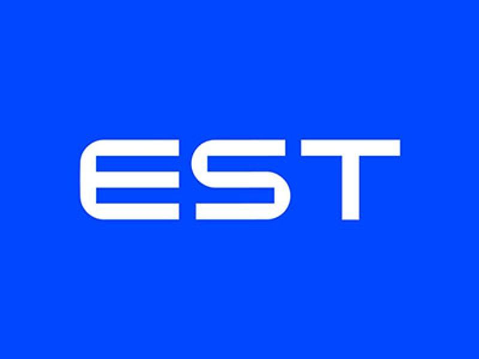

백엔드 개발 오르미 1기 모집
작성자:홍길동
작성일:2023.04.24
조회수:1020

이스트 소프트 백엔드 개발 오르미 1기모집
오르미란?
이스트소프트 백엔드 개발자 부트캠프 참여자를 일컫는 말입니다.
산, 봉우리란 뜻의 오름에서 착안하여 교육을 통해 개발 실력을 올리자는 의미를 담고 있습니다.
이스트소프트와 함께 백엔드 개발이란 오름⛰을 넘어 정상에 함께 올라 보시죠!
이런 분이 함께해요
- 비전공자이지만 백엔드 개발자가 되고 싶은 사람
- 이스트소프트 실무 노하우에 대해 알고 싶은 사람
- 전공자이지만 실무와 관련된 프로젝트를 경험하고 싶은 사람
- 이스트소프트와 함께 백엔드 개발 커리어를 쌓고 싶은 사람
선정과정
- 서류 접수
- 서류 심사
- 사전 테스트 진행
- 합격자 발표
- 내일배움카드 발급
- 교육 시작
이스트소프트 바로가기